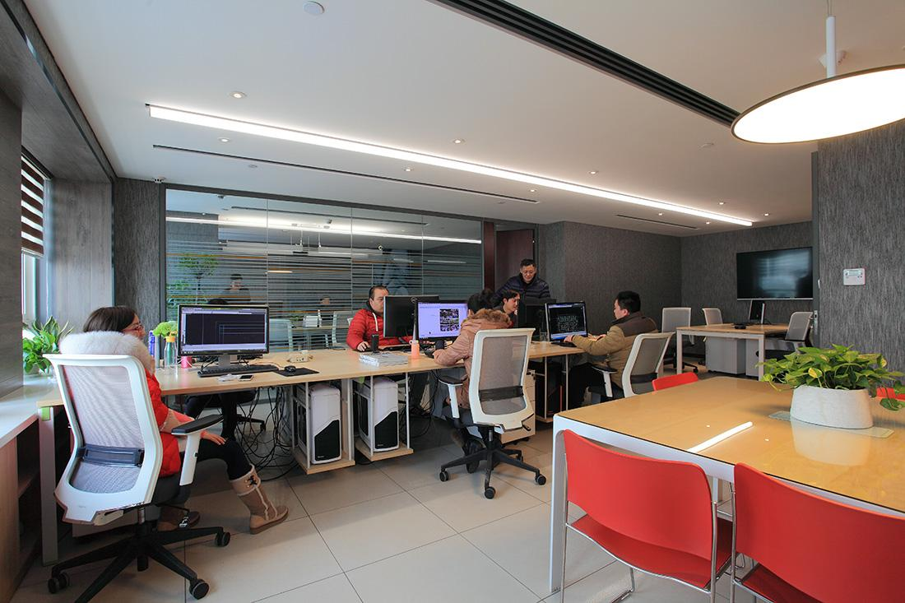

-
实习经历 By BAIDU,Link
从 2012 年 7 月 25 日与 xx 签订合同， 8 月 13 日进入技术中心产品开发部至今，已经过去将 近 1 年的时间。期间，我可谓经历丰富，做过产品开发，也做过产品设计，日常工作也作出 了令领导满意，同事认可的业绩。以下，向各位汇报下个人在过去一年的实习经历。 我的实习共分为三个阶段。 2012 年 8 月~11 月，有了人生中第一位带教导师—— xx，并跟随 xx 学习了系统动力学，熟 悉了动力学分析软件 ADAMS 的基本操作， 成功完成了 MQB 麦弗逊前悬和多连杆后悬的建 模和初步仿真。 但是看着身边的同事都在做实际的产品， 心里非常着急和担心， 生怕与别人 的差距不断增大，于是向领导反映自己的想法——去做产品相关的工作。 回头再看过去， 既有收获，同时也埋下了深深的遗憾：因为我性格比较适合做研究，经常会 有很多的新想法， 这都与当前的工作产生很大的冲突。 但是我相信自己一定能在不断的磨练 中成长， 通过完善自己不断减少因为自身缺点而引起的问题。 同时，个人也不希望完全抛弃 之前所做的努力， 今后还是会结合自己的工作经验继续做这方面的研究， 使自己的能力更进 一步。 2012 年 12 月~2013 年 3 月，安排参与 SGM318 项目前副车架的试制，跟随 xx 做 IV 阶段的 相关工作， 包括图纸的更新、技术文件的制作以及对供应商的评审；期间， 也结识了公司外 聘专家 xx，向他请教了 UG motion 模块的相关知识。 这段是进入公司以来非常有收获的时期。 不仅每天都在学习新的知识， 而且所做的工作也很 符合我的兴趣，尤其是对 UG 产生了很大的兴趣，想急切的去掌握这门本领。但是随着 xx 的离开和我的岗位变化， 也就变成了昙花一现。 我希望自己还是能够继续做下去， 最后成为 这个方面的先进人才。 2013 年 4 月至今，先期开发部成立之后，我也调入了产品三科，开始接触自主品牌项目， 接手包括 AS21、BP1X 和 ZP11 项目控制臂方面的工作：期间，顺利完成了 BP 和 ZP 的工 程更改，之后更是独立参与 AS 项目的试制和生产。 这段时间虽然很痛苦，很辛苦， 常常加班到很晚， 在遇到自己很难解决的问题时， 很着急但 是也很无奈，只能用时间去弥补自己的不足， 减小与别人的差距。 回顾这段经历时，从来没 有后悔， 因为在这里完成了人生的升华： 仅用半个月的时间基本适应新工作， 并且没有很大 的工作失误， 虽然工作初期犯了很多新手常有的错误； 同时， 并没有被之前工作的漏洞所拖 累，坚持用科学的工作方法和积极的工作态度去对待身边的人和事，出色地完成工作任务， 不断提升个人和团队的工作能力。
{kind=link}